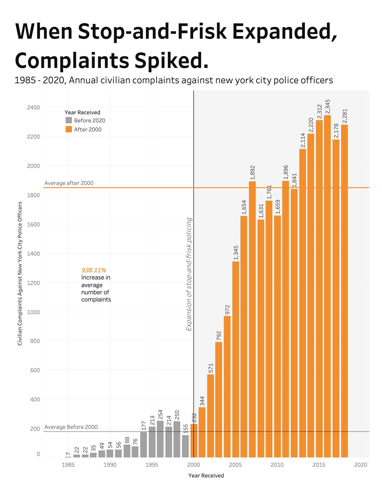
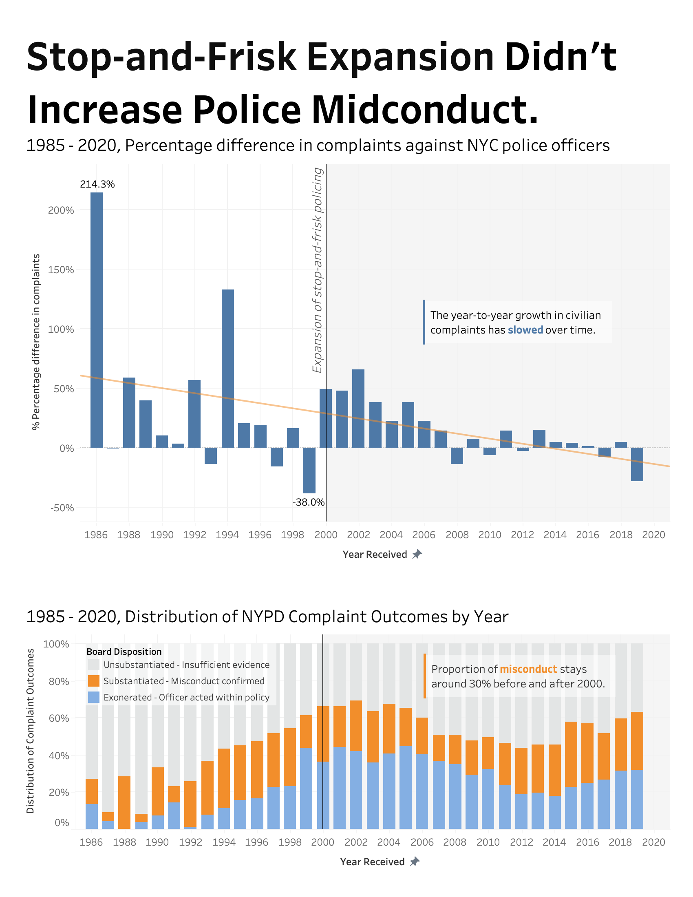

Proposition: The NYPD's expansion of stop-and-frisk policies led to an increase in police misconduct reports.
FOR the Proposition

Design Decisions and Rationale:
- [Score: -1.5] Portrait orientation. It makes the post-2000 bars feel taller and more visually striking, reinforcing the “spike” in complaints. However it can be hard to see the full graph on a horizontal screen like laptops. I compared the landscape orientation and portrait wise tells stronger story.
- [Score: -1.5] Gray (pre-2000) vs. orange (post-2000) color encoding. It clearly separates the two time periods being compared. This make the before and after comparison feels even more than the data actually is. One alternative is to remove colouring, since there is already a vertical reference line at 2000, but this makes this plot a bit boring.
- [Score: -1.5] A vertical reference line at 2000, along with panel shading. It creates a clear visual break that signals a policy-era shift. This has the same intention as the previous bullet point.
- [Score: -1.5] Horizontal reference lines show the average complaints before vs. after 2000; the annotation highlights the size of the change to support the proposition. This uses numerical values to more trustfully convey the intended message. Views trust the plot more when they see actual calculated statistics. However, this calculation over simplifies the situations (outliers, skewness, growth in population and NYPD staffing, etc). Alternative can be use an average adjusted for population growth, which is more earnest, but weakens the proposition.
- [Score: -1.5] A large, bold headline states the intended takeaway. viewers will see this first and it frames how they interpret the rest of the chart. At the same time, the headline can be misleading and reduces the willingness for viewers to spend effort on extracting information from the visual on their own. Deceptive, but supports the proposition.
AGAINST the Proposition

Design Decisions and Rationale:
- [Score: -1.5] The first chart uses year-to-year percentage change. It shifts attention away from the large increase in total complaints after 2000 and focuses on how the rate of growth evolves over time. However, this transformation can be misleading. I considered showing both counts and growth rate together, but chose only the growth rate because it strengthens the argument against the proposition.
- [Score: -1.0] A downward-sloping trend line. It summarizes the noisy yearly percentage changes into a single visual direction: overall trajectory declines over time. This helps viewers interpret the chart as evidence that complaint growth slowed rather than intensified. However, it may oversimplify the data. I considered leaving the bars without a trend line, but the trend line makes the intended interpretation clearer.
- [Score: 1.5] The second chart uses a 100% stacked bar chart. It focuses on the proportion of substantiated, exonerated, and unsubstantiated complaints rather than total counts, which supports the argument that the share of misconduct findings did not increase. An alternative is to show raw counts of each outcome, but that would make the chart dominated by the overall growth in complaints.
- [Score: -1.0] Bars representing substantiated misconduct are placed in the middle of the stacked bars, making it difficult to directly read their value from the axis. This leads viewers to rely more on the accompanying annotation. One could place this category at the bottom of the stack for easier comparison, but keeping it in the middle introduces some ambiguity that weakens challenges to the interpretation.
- [Score: 2.0] An annotation highlights that the proportion of substantiated complaints stays around 30% before and after 2000. This textual cue guides viewers toward the key interpretation. The annotation is supported by the underlying data, and serves as an earnest aid.
Final Reflection
Designing these two visuals was mostly a process of trial and error. I kept trying different variables in the worksheet to see which ones support each direction of the proposition. The values of the actual data largely determine whether certain design choices can be effective. What was straightforward was showing the earnest version of the story: the truth in the actual data. What was difficult was trying to hide that “truth” or the full picture of the data. That turned out to be much harder than simply presenting what the data shows. Ethical analysis and visualization, in my view, should focus on showing users the data without the intention of convincing them in one particular direction. For example, propositions like the one used in the headline should ideally not appear in the visualization itself. The conclusion of a visualization should instead be an objective description, similar to what is written in the captions of these two plots. The takeaway should not be a proposition but a concise summary of what the data shows. In addition, ethical visualization should acknowledge potential limitations of the analysis. For example, factors such as population growth, increases in NYPD staffing, or advances in information technology that make it easier to record complaints could influence the number of complaints over time. Mentioning these possibilities helps viewers think more critically and encourages them to explore the issue further on their own.
I do not think there is a sharp boundary between acceptable persuasive choices and misleading ones. Some misleading design choices are very obvious and immediately raise concerns, such as inverting the y-axis to make an upward trend appear downward, or starting the y-axis above zero to make a very small increase look large. However, most misleading designs are harder to notice. They are misleading not because of what they show, but because of what they do not show. Regardless of how comprehensive a data analysis is, even if it contains hundreds of figures, it can never represent the full dataset. It is impossible to show every piece of information in the data. As a result, even when a dataset strongly supports a particular claim, there will always be some aspects with weaker evidence than others, and design choices can make those weaknesses more visible. In such cases, the misleading part may not lie in the design of the chart itself, but in the decision to omit other features that could reveal a different interpretation. Because these omissions are often subtle and unavoidable in practice, it becomes difficult to draw a clear line between acceptable persuasive framing and truly misleading visualization.